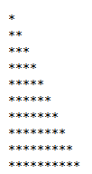
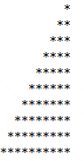
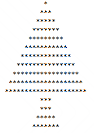

Punto 1
Realizar la siguiente figura por medio del ciclo Para

Proceso Punto1
Definir i,j Como Entero;
Escribir "*";
Para i <- 1 Hasta 10 Con Paso 1 Hacer
Para j <- 1 Hasta i Con Paso 1 Hacer
Escribir Sin Saltar "*";
FinPara
Escribir "*";
FinPara
FinProceso
Punto 2
Realizar la siguiente figura por medio del ciclo Mientras - Hacer

Proceso Punto2
Definir i,j Como Entero;
i <- 1;
Mientras i<=10 Hacer
j <- 1;
Mientras j<=10 hacer
si j>(10 - i) Entonces
Escribir Sin Saltar "*";
SiNo
Escribir Sin Saltar " ";
FinSi
si j=10 Entonces
Escribir " ";
FinSi
j<-j+1;
FinMientras
i<-i+1;
FinMientras
FinProceso
Punto 3
Realizar un programa en el cual se solicite la edad de una persona. Si
la persona es mayor o igual a 18 años, deberá mostrar en pantalla:
Usted es mayor de edad.

Proceso punto3
Definir i, j, k, l Como Entero;
i <- 1;
l <- 1;
Repetir
Escribir " ";
Para k <- 18 hasta i con paso -2 Hacer
Escribir Sin Saltar " ";
FinPara
Para j <- 1 Hasta i Con Paso 1 Hacer
Escribir Sin Saltar "*";
FinPara
i <- i + 2;
Hasta Que i = 21
Escribir " ";
Repetir
Para k <- 0 hasta 12 Con Paso 2 Hacer
Escribir Sin Saltar " ";
FinPara
Para j <- 3 Hasta 7 Con Paso 1 Hacer
Escribir Sin Saltar "*";
FinPara
Escribir " ";
l <- l + 1;
Hasta Que l = 5;
Escribir " ";
FinProceso
Punto 4
Se requiere un programa que pueda crear la tabla de multiplicar del número que el usuario indique por
medio del ciclo Para; esta debe ser impresa del 1 al 10. Ejemplo, si el usuario indica que desea crear
la tabla del 5, entonces el resultado debería ser el siguiente:
1 x 5 = 5
2 x 5 = 10
3 x 5 = 15
4 x 5 = 20
5 x 5 = 25
6 x 5 = 30
7 x 5 = 35
8 x 5 = 40
9 x 5 = 45
10 x 5 = 50
Proceso punto4
Definir multiplicar, resultado Como Entero;
Definir i Como Entero;
Escribir "Escribe el numero de la tabla de Multiplicar que quieres conocer ";
Leer multiplicar;
Para i<- 0 Hasta 10 Con Paso 1 Hacer
resultado <- multiplicar * i;
Escribir multiplicar, " X ", i , " = ", resultado;
FinPara
FinProceso
Punto 5
Utilizando el ciclo que usted desee, crear un menú de ejecución infinita hasta que el usuario desee terminar dicho ciclo.
Menu de usuario
1. Captura nombre
2. Saludar persona
3. Salir del sistema
Proceso punto5
Definir nombre Como Caracter;
Definir continuar, seguir Como Logico;
Definir menu Como Entero;
Repetir
Escribir "ELIGE QUE DESEAS EJECUTAR";
Escribir "1. Capturar tu nombre";
Escribir "2. Saludar persona";
Escribir "3. Salir de sistema";
Leer menu;
Limpiar Pantalla;
Si menu >= 1 Y menu <= 3 Entonces
Segun menu Hacer
1:
Escribir "Escribe tu nombre: ";
Leer nombre;
Limpiar Pantalla;
Escribir "TU NOMBRE CAPTURADO ES: ", nombre;
Esperar 2 segundos;
Limpiar Pantalla;
Escribir "¿Deseas continuar? Si: Verdadero(1) o No: Falso(0)";
Leer continuar;
Limpiar Pantalla;
Si continuar = Verdadero Entonces
seguir <- Verdadero;
SiNo
Escribir "DESCONECTADO";
seguir <- Falso;
FinSi
2:
Escribir "Escribe tu nombre: ";
Leer nombre;
Limpiar Pantalla;
Escribir "HOLA: ", nombre , " Ten un buen dia";
Esperar 2 segundos;
Limpiar Pantalla;
Escribir "¿Deseas continuar? Si: Verdadero(1) o No: Falso(0)";
Leer continuar;
Limpiar Pantalla;
Si continuar = Verdadero Entonces
seguir <- Verdadero;
SiNo
Escribir "DESCONECTADO";
seguir <- Falso;
FinSi
3:
Escribir "DESCONECTADO DEL SERVIDOR";
seguir <- falso;
FinSegun
SiNo
Escribir "Es un numero no valido";
Esperar 2 Segundos;
Limpiar Pantalla;
Escribir "INTENTALO DE NUEVO";
Esperar 2 Segundos;
Limpiar Pantalla;
seguir <- Verdadero;
FinSi
Hasta Que seguir = falso;
FinProceso
Punto 6
Se está creando una aplicación que va a estar conectada con un prototipo que permita almacenar contactos telefónicos en el dispositivo. Para ello cada contacto debe contener nombre completo, teléfono y organización. Se requiere que la aplicación permita añadir 3 contactos verificando que el número no esté almacenado, buscar contactos almacenados y eliminar contactos si el usuario lo requiere. Recuerde que el sistema debe terminar cuando el usuario así lo indique.
Proceso punto6
Definir contacto, guardado1, guardado2, guardado3 Como Real;
Definir nombre, nombreG1, nombreG2, nombreG3 , organizacion , organizacionG1, organizacionG2, organizacionG3 Como Caracter;
Definir accion, seguir Como Entero;
Definir continuar Como Logico;
continuar <- Falso;
guardado1 <- 0;
guardado2 <- 0;
guardado3 <- 0;
nombreG1 <- "NO ASIGNADO";
nombreG2 <- "NO ASIGNADO";
nombreG3 <- "NO ASIGNADO";
organizacionG1 <- "NO ASIGNADO";
organizacionG2 <- "NO ASIGNADO";
organizacionG3 <- "NO ASIGNADO";
Repetir
Escribir "QUE FUNCION DESEA HACER EN SU AGENDA";
Escribir "1. Agregar Nuevo contacto, MAXIMO: 3 CONTACTOS";
Escribir "2. Buscar Contacto";
Escribir "3. Eliminar contactos";
Leer accion;
Limpiar Pantalla;
Si accion >= 1 Y accion <= 3 Entonces
Segun accion hacer
1:
Escribir "ESCRIBE EL NOMBRE DEL CONTACTO A AGREGAR: ";
leer nombre;
Limpiar Pantalla;
Escribir "INGRESE EL NUMERO DE TELEFONO: ";
Leer contacto;
Limpiar Pantalla;
Escribir "INGRESE EL NOMBRE DE LA ORGANIZACION: ";
Leer organizacion;
Limpiar Pantalla;
Si contacto = guardado1 O contacto = guardado2 O contacto = guardado3 Entonces
Escribir "EL NUMERO YA EXISTE";
SiNo
Si guardado1 = 0 Entonces
nombreG1 <- nombre;
guardado1 <- contacto;
organizacionG1 <- organizacion;
SiNo
Si guardado2 = 0 Entonces
nombreG2 <- nombre;
guardado2 <- contacto;
organizacionG2 <- organizacion;
SiNo
Si guardado3 = 0 Entonces
nombreG3 <- nombre;
guardado3 <- contacto;
organizacionG3 <- organizacion;
SiNo
Escribir "AGENDA LLENA , PORFAVOR ELIMINA CONTACTO";
FinSi
FinSi
FinSi
FinSi
2:
Escribir "QUE CONTACTO DESEAS CONSULTAR: ";
Escribir "1. PRIMER CONTACTO";
Escribir "2. SEGUNDO CONTACTO";
Escribir "3. TERCER CONTACTO";
Leer accion;
Limpiar Pantalla;
Segun accion Hacer
1:
Escribir "TU PRIMER CONTACTO ES: Numero: ", guardado1, " NOMBRE: ", nombreG1 , " ORGANIZACION: ", organizacionG1;
2:
Escribir "TU SEGUNDO CONTACTO ES: Numero: ", guardado2, " NOMBRE: ", nombreG2 , " ORGANIZACION: ", organizacionG2;
3:
Escribir "TU TERCER CONTACTO ES: Numero: ", guardado3, " NOMBRE: ", nombreG3 , " ORGANIZACION: ", organizacionG3;
FinSegun
3:
Escribir "QUE CONTACTO DESEAS ELIMINAR: ";
Escribir "1. PRIMER CONTACTO";
Escribir "2. SEGUNDO CONTACTO";
Escribir "3. TERCER CONTACTO";
Leer accion;
Limpiar Pantalla;
Segun accion Hacer
1:
Escribir "ELIMINADO PRIMER CONTACTO";
guardado1 <- 0;
nombreG1 <- "NO ASIGADO";
organizacionG1 <- "NO ASIGNADO";
2:
Escribir "ELIMINADO SEGUNDO CONTACTO";
guardado2 <- 0;
nombreG2 <- "NO ASIGADO";
organizacionG2 <- "NO ASIGNADO";
3:
Escribir "ELIMINADO TERCER CONTACTO";
guardado3 <- 0;
nombreG3 <- "NO ASIGADO";
organizacionG3 <- "NO ASIGNADO";
FinSegun
FinSegun
Escribir "¿DESEAS CONTINUAR? 1:Si , 0: No ";
Leer seguir;
Si seguir = 0 O seguir = 1 Entonces
Si seguir = 0 Entonces
continuar <- Verdadero;
FinSi
SiNo
Escribir "ACCION NO VALIDA";
Escribir "DESCONECTADO";
Esperar 3 Segundos;
continuar <- Verdadero;
FinSi
Limpiar Pantalla;
SiNo
Escribir "ACCION NO VALIDA";
FinSi
Hasta Que continuar = Verdadero
FinProceso
Punto 7
El parqueadero "El guardián" presta sus servicios de parqueadero nocturno para los usuarios del barrio y requiere una aplicación que permita registrar los vehículos que se cuidan en estas instalaciones. Se sugiere que el parqueadero tenga los atributos del vehículo como son, placa y marca, y los datos del cliente como son nombre completo y número de teléfono. Para cada vehículo se debe permitir la opción de ingresar al parqueadero, retirar del parqueadero y consultar si un vehículo se encuentra en el parqueadero. Recuerde que el sistema debe terminar cuando el usuario así lo indique. Tenga en presente que el parqueadero solo puede almacenar máximo 5 vehículos.
Proceso punto7
Definir eleccion Como Entero;
Definir nombre, placa, marca Como Caracter;
Definir telefono Como Real;
Definir continuar Como Logico;
Definir nombre1, nombre2, nombre3, nombre4, nombre5 Como Caracter;
Definir telefono1, telefono2, telefono3, telefono4, telefono5 Como Real;
Definir placa1, placa2, placa3, placa4, placa5 Como Caracter;
Definir marca1, marca2, marca3, marca4, marca5 Como Caracter;
Definir lugar1, lugar2, lugar3, lugar4, lugar5 Como Entero;
continuar <- Verdadero;
nombre1 <- "NO ASIGNADO";
telefono1 <- 0;
placa1 <- "VACIO";
marca1 <- "VACIO";
lugar1 <- 0;
nombre2 <- "NO ASIGNADO";
telefono2 <- 0;
placa2 <- "VACIO";
marca2 <- "VACIO";
lugar2 <- 0;
nombre3 <- "NO ASIGNADO";
telefono3 <- 0;
placa3 <- "VACIO";
marca3 <- "VACIO";
lugar3 <- 0;
nombre4 <- "NO ASIGNADO";
telefono4 <- 0;
placa4 <- "VACIO";
marca4 <- "VACIO";
lugar4 <- 0;
nombre5 <- "NO ASIGNADO";
telefono5 <- 0;
placa5 <- "VACIO";
marca5 <- "VACIO";
lugar5 <- 0;
Mientras continuar = Verdadero Hacer
Esperar 2 segundos;
Limpiar Pantalla;
Escribir "Bienvenido a El parquedero EL GUARDIAN";
Escribir "QUE SERVICIO DESEAS REALIZAR";
Escribir "1. Ingresar un vehiculo";
Escribir "2. Retirar un vehiculo";
Escribir "3. Consultar su vehiculo";
Escribir "4. Salir del sistema";
Leer eleccion;
Limpiar Pantalla;
Si eleccion >= 0 Y eleccion <= 4 Entonces
Segun eleccion Hacer
1:
Escribir "Escribe los siguientes datos para Ingresar tu vehiculo";
Esperar 2 segundos;
Escribir "ESCRIBE TU NOMBRE COMPLETO";
Leer nombre;
Limpiar Pantalla;
Escribir "Telefono del dueño";
Leer telefono;
Limpiar Pantalla;
Escribir "PLACAS DEL VEHICULO";
leer placa;
Limpiar Pantalla;
Escribir "MARCA DEL VEHICULO";
leer marca;
Si lugar1 = 1 Y lugar2 = 1 Y lugar3 = 1 Y lugar4 = 1 Y lugar5 = 1 Entonces
Escribir "PARQUEADERO LLENO, NO TENEMOS LUGAR DISPONIBLE";
Escribir "Gracias por su visita";
SiNo
Si lugar1 = 0 Entonces
nombre1 <- nombre;
telefono1 <- telefono;
placa1 <- placa;
marca1 <- marca;
lugar1 <- 1;
SiNo
Si lugar2 = 0 Entonces
nombre2 <- nombre;
telefono2 <- telefono;
placa2 <- placa;
marca2 <- marca;
lugar2 <- 1;
SiNo
Si lugar3 = 0 Entonces
nombre3 <- nombre;
telefono3 <- telefono;
placa3 <- placa;
marca3 <- marca;
lugar3 <- 1;
SiNo
Si lugar4 = 0 Entonces
nombre4 <- nombre;
telefono4 <- telefono;
placa4 <- placa;
marca4 <- marca;
lugar4 <- 1;
Sino
Si Lugar5 = 0 Entonces
nombre5 <- nombre;
telefono5 <- telefono;
placa5 <- placa;
marca5 <- marca;
lugar5 <- 1;
FinSi
FinSi
FinSi
FinSi
FinSi
FinSi
Limpiar Pantalla;
Escribir "TU VEHICULO: ", marca;
Escribir "PLACAS: ", placa;
Escribir "DUEÑO: ", nombre;
Escribir "HA SIDO GUARDADO";
Esperar 2 Segundos;
Limpiar Pantalla;
2:
Si lugar1 = 0 Y lugar2 = 0 Y lugar3 = 0 Y lugar4 = 0 Y lugar5 = 0 Entonces
Escribir "EL PARQUEADERO ESTA VACIO";
SiNo
Escribir "VEHICULO DESEAS RETIRAR DE NUESTRO PARQUEARO: ";
Escribir "1. ",marca1, " PLACA: ", placa1;
Escribir "2. ",marca2, " PLACA: ", placa2;
Escribir "3. ",marca3, " PLACA: ", placa3;
Escribir "4. ",marca4, " PLACA: ", placa4;
Escribir "5. ",marca5, " PLACA: ", placa5;
Leer eleccion;
Limpiar Pantalla;
Si eleccion >= 1 Y eleccion <= 5 Entonces
Segun eleccion Hacer
1:
Si nombre1 = "NO ASIGNADO" Y placa1 = "VACIO" Entonces
Escribir "NO HAY VEHICULO PARA RETIRAR";
SiNo
Escribir "El Vehiculo de: ", nombre1 , " Placa: ", placa1, " HA SIDO RETIRADO DEL PARQUE";
nombre1 <- "NO ASIGNADO";
telefono1 <- 0;
placa1 <- "VACIO";
marca1 <- "VACIO";
lugar1 <- 0;
FinSi
2:
Si nombre2 = "NO ASIGNADO" Y placa2 = "VACIO" Entonces
Escribir "NO HAY VEHICULO PARA RETIRAR";
SiNo
Escribir "El Vehiculo de: ", nombre2 , " Placa: ", placa2, " HA SIDO RETIRADO DEL PARQUEADERO";
nombre2 <- "NO ASIGNADO";
telefono2 <- 0;
placa2 <- "VACIO";
marca2 <- "VACIO";
lugar2 <- 0;
FinSi
3:
Si nombre3 = "NO ASIGNADO" Y placa3 = "VACIO" Entonces
Escribir "NO HAY VEHICULO PARA RETIRAR";
SiNo
Escribir "El Vehiculo de: ", nombre3 , " Placa: ", placa3, " HA SIDO RETIRADO DEL PARQUEADERO";
nombre3 <- "NO ASIGNADO";
telefono3 <- 0;
placa3 <- "VACIO";
marca3 <- "VACIO";
lugar3 <- 0;
FinSi
4:
Si nombre4 = "NO ASIGNADO" Y placa4 = "VACIO" Entonces
Escribir "NO HAY VEHICULO PARA RETIRAR";
SiNo
Escribir "El Vehiculo de: ", nombre4 , " Placa: ", placa4, " HA SIDO RETIRADO DEL PARQUEADERO";
nombre4 <- "NO ASIGNADO";
telefono4 <- 0;
placa4 <- "VACIO";
marca4 <- "VACIO";
lugar4 <- 0;
FinSi
5:
Si nombre5 = "NO ASIGNADO" Y placa5 = "VACIO" Entonces
Escribir "NO HAY VEHICULO PARA RETIRAR";
SiNo
Escribir "El Vehiculo de: ", nombre5 , " Placa: ", placa5, " HA SIDO RETIRADO DEL PARQUEADERO";
nombre5 <- "NO ASIGNADO";
telefono5 <- 0;
placa5 <- "VACIO";
marca5 <- "VACIO";
lugar5 <- 0;
FinSi
FinSegun
FinSi
FinSi
3:
Escribir "ESCRIBE LA PLACA";
Leer placa;
Si placa = placa1 Entonces
Escribir "TU VEHICULO: ", marca1, " SE ENCUENTRA EN NUESTRO TALLER";
SiNo
Si placa = placa2 Entonces
Escribir "TU VEHICULO: ", marca2, " SE ENCUENTRA EN NUESTRO TALLER";
SiNo
Si placa = placa3 Entonces
Escribir "TU VEHICULO: ", marca3, " SE ENCUENTRA EN NUESTRO TALLER";
SiNo
Si placa = placa4 Entonces
Escribir "TU VEHICULO: ", marca4, " SE ENCUENTRA EN NUESTRO TALLER";
SiNo
Si placa = placa5 Entonces
Escribir "TU VEHICULO: ", marca5, " SE ENCUENTRA EN NUESTRO TALLER";
SiNo
Escribir "LA PLACA: ", placa, " NO REGISTRA EN NUESTRO SISTEMA";
FinSi
FinSi
FinSi
FinSi
FinSi
4:
Escribir "GRACIAS POR VISITARNOS";
Esperar 3 segundos;
continuar <- Falso;
FinSegun
SiNo
Escribir "ELECCION NO VALIDA";
FinSi
FinMientras
FinProceso
Punto 8
La escuela automovilística "El Maestro" requiere una aplicación que permita registrar a sus clientes en los cursos de enseñanza automovilística y establecer quienes lo han aprobado para continuar con el trámite de adquirir la licencia de conducción. Para cada usuario se debe permitir registrar su ingreso al curso, consultar usuarios que hayan presentado el curso y resultados de la prueba del curso (si fueron aprobados o no). Recuerde que el sistema debe terminar cuando el usuario así lo indique. Tenga presente que la escuela tiene capacidad máxima de gestionar 8 usuarios en su totalidad.
Proceso punto8
Definir usuario, curso Como Caracter;
Definir user1, user2, user3, user4, user5, user6, user7, user8 Como Caracter;
Definir eleccion Como Entero;
Definir continuar Como Logico;
continuar <- Verdadero;
curso <- "ENSEÑANZA AUTOMOVILISTICA";
user1 <- "NO REGISTRADO";
user2 <- "NO REGISTRADO";
user3 <- "NO REGISTRADO";
user4 <- "NO REGISTRADO";
user5 <- "NO REGISTRADO";
user6 <- "NO REGISTRADO";
user7 <- "NO REGISTRADO";
user8 <- "NO REGISTRADO";
Repetir
Escribir "Bienvenido al sistema de la Escuela Automovilistica EL MAESTRO";
Escribir "Menú";
Escribir "1. REGISTRAR INGRESO AL CURSO";
Escribir "2. Consultar usuarios En Curso";
Escribir "3. Consultar aprobados";
Escribir "4. Salir del sistema";
Leer eleccion;
Limpiar Pantalla;
Si eleccion >= 1 Y eleccion <= 4 Entonces
Segun eleccion Hacer
1:
Escribir "ESCRIBE EL NOMBRE COMPLETO DEL USUARIO A REGISTRAR";
Leer usuario;
Limpiar Pantalla;
Escribir "REGISTRO EN CURSO COMPLETO";
Limpiar Pantalla;
SI user1 <> "NO REGISTRADO" Y user2 <> "NO REGISTRADO" Y user3 <> "NO REGISTRADO" Y user4 <> "NO REGISTRADO" Y user5 <> "NO REGISTRADO" Y user6 <> "NO REGISTRADO" Y user7 <> "NO REGISTRADO" Y user8 <> "NO REGISTRADO" Entonces
Escribir "CURSO LLENO , NO PUEDES REGISTRAR MAS USUARIOS";
Esperar 2 Segundos;
Limpiar Pantalla;
SiNo
si user1 = "NO REGISTRADO" Entonces
user1 <- usuario;
SiNo
si user2 = "NO REGISTRADO" Entonces
user2 <- usuario;
SiNo
si user3 = "NO REGISTRADO" Entonces
user3 <- usuario;
SiNo
si user4 = "NO REGISTRADO" Entonces
user4 <- usuario;
SiNo
si user5 = "NO REGISTRADO" Entonces
user5 <- usuario;
SiNo
si user6 = "NO REGISTRADO" Entonces
user6 <- usuario;
SiNo
si user7 = "NO REGISTRADO" Entonces
user7 <- usuario;
SiNo
si user8 = "NO REGISTRADO" Entonces
user8 <- usuario;
FinSi
FinSi
FinSi
FinSi
FinSi
FinSi
FinSi
FinSi
FinSi
2:
SI user1 = "NO REGISTRADO" Y user2 = "NO REGISTRADO" Y user3 = "NO REGISTRADO" Y user4 = "NO REGISTRADO" Y user5 = "NO REGISTRADO" Y user6 = "NO REGISTRADO" Y user7 = "NO REGISTRADO" Y user8 = "NO REGISTRADO" Entonces
Escribir "CURSO VACIO";
SiNo
Escribir "LOS SIGUIENTES USUARIOS PERTENECEN AL CURSO: ", curso;
Si user1 <> "NO REGISTRADO" Entonces
Escribir user1;
FinSi
Si user2 <> "NO REGISTRADO" Entonces
Escribir user2;
FinSi
Si user3 <> "NO REGISTRADO" Entonces
Escribir user3;
FinSi
Si user4 <> "NO REGISTRADO" Entonces
Escribir user4;
FinSi
Si user5 <> "NO REGISTRADO" Entonces
Escribir user5;
FinSi
Si user6 <> "NO REGISTRADO" Entonces
Escribir user6;
FinSi
Si user7 <> "NO REGISTRADO" Entonces
Escribir user7;
FinSi
Si user8 <> "NO REGISTRADO" Entonces
Escribir user8;
FinSi
FinSi
Escribir "Presiona una tecla para continuar";
Esperar Tecla;
Limpiar Pantalla;
3:
SI user1 = "NO REGISTRADO" Y user2 = "NO REGISTRADO" Y user3 = "NO REGISTRADO" Y user4 = "NO REGISTRADO" Y user5 = "NO REGISTRADO" Y user6 = "NO REGISTRADO" Y user7 = "NO REGISTRADO" Y user8 = "NO REGISTRADO" Entonces
Escribir "CURSO VACIO, NO HAY ESTUDIANTES";
Esperar 3 segundos;
Limpiar Pantalla;
SiNo
SI user2 = "NO REGISTRADO" Y user5 = "NO REGISTRADO" Y user6 = "NO REGISTRADO" Y user8 = "NO REGISTRADO" Entonces
Escribir "NO HAY APROBADOS";
Esperar 2 Segundos;
Limpiar Pantalla;
SiNo
Escribir "LOS SIGUIENTES ESTUDIANTES HAN APROBADO EL CURSO: ",curso;
Si user2 <> "NO REGISTRADO" Entonces
Escribir user2;
FinSi
Si user5 <> "NO REGISTRADO" Entonces
Escribir user5;
FinSi
Si user6 <> "NO REGISTRADO" Entonces
Escribir user6;
FinSi
Si user8 <> "NO REGISTRADO" Entonces
Escribir user8;
FinSi
Escribir "Pulsa una tecla para continuar";
Esperar Tecla;
Limpiar Pantalla;
FinSi
FinSi
4:
Escribir "DESCONECTADO DEL SISTEMA";
continuar <- Falso;
FinSegun
SiNo
Escribir "ELECCION NO VALIDA";
Esperar 2 segundos;
Limpiar Pantalla;
FinSi
Hasta Que continuar = Falso;
FinProceso